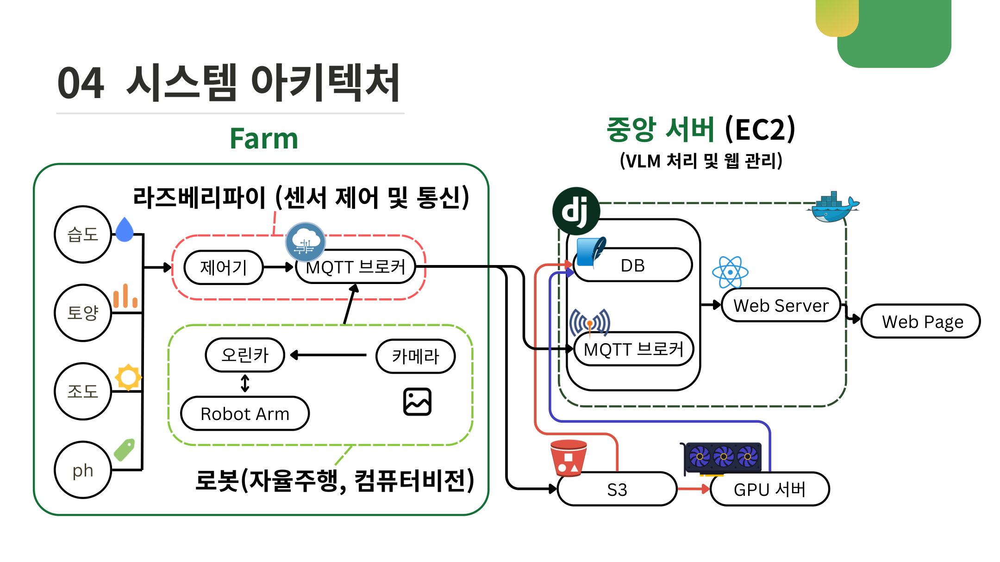
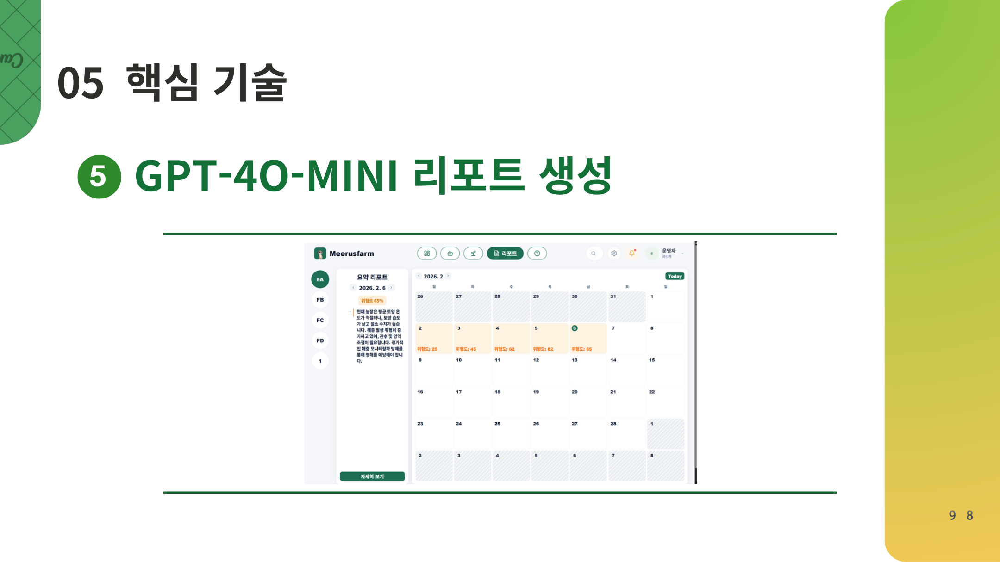

Project 02
MEERUSFARM 지능형 스마트팜 통합 관리 솔루션
자율주행 로봇, 센서 데이터, 비전 AI, RAG 기반 LLM 리포트를 연결해 사람의 눈을 대신하는 데이터 기반 의사결정 솔루션을 구현한 프로젝트입니다.
프로젝트 목표
스마트팜에서는 사람이 직접 잎, 줄기, 열매의 병반과 곰팡이 여부를 순찰하고 판단해야 합니다. 이 방식은 작업자 경험에 의존해 판단 정확도가 일정하지 않고, 사진 촬영과 위치 기록, 작업 로그 공유도 수작업으로 진행되어 비효율이 발생합니다.
목표 요약: 병해충 예측 고도화 → 방제 효율 극대화 → 센서·비전·논문 데이터 기반 리포트 자동 생성.
시스템 아키텍처
Farm 영역의 라즈베리파이는 습도, 토양, 조도, pH 센서와 제어기를 담당하고, 로봇 영역의 Jetson Orin Nano는 카메라 기반 비전 추론을 수행합니다. 중앙 서버는 EC2, DB, MQTT 브로커, Web Server, S3, GPU 서버를 연결해 탐지 결과와 리포트를 웹에서 확인할 수 있도록 구성했습니다.

아키텍처 근거: 센서 제어 및 통신, 로봇 비전 추론, EC2 기반 웹 관리, S3/GPU 서버 연동 구조로 Edge-Farm-Cloud 흐름을 구성했습니다.
개발환경 및 AI Pipeline
실행환경
Backend: Django 6 + DRF · Frontend: React 19 + Vite
Database: SQLite · Communication: MQTT
Deployment: Docker Compose
AI 환경
LLM: GPT-4o-mini (OpenAI Compatible API)
Vision AI: YOLO Detection + Segmentation
Data: MQTT Sensor + Vision 결과
MQTT 센서 수신
온도 · 습도 등 환경 데이터 수신
Django 백엔드 반영
센서 값을 SQLite DB에 반영
Vision AI 분석
YOLO 병해 탐지, Segmentation으로 severity 산출
센서 + Vision 통합
농장 단위 전 구역 평균 계산, JSON 컨텍스트 생성
키워드 필터링 RAG
논문 PDF 3편에서 키워드 포함 페이지를 발췌해 참고 문맥 구성
프롬프트 · LLM 호출
센서 + Vision 컨텍스트 + 논문 문맥을 GPT-4o-mini에 전달
AI 리포트 생성
요약 · 위험도 · 원인 분석, 권장 조치 및 관리 방안
DB 저장 · 대시보드
Report 모델 저장, 히스토리 조회 · 시각화
핵심 기능
병해충 이상 판단
YOLO26 Nano를 Jetson Orin Nano에서 실시간으로 구동하고, TensorRT(FP16)로 Edge 환경 추론 속도를 최적화했습니다.
병해충 심각도 수치화
잿빛곰팡이 병반 경계를 픽셀 단위로 추출하기 위해 YOLO26 Large Seg 모델을 사용하고 직접 라벨링한 데이터로 파인튜닝했습니다.
센서·논문 데이터 기반 RAG 분석
센서 데이터와 PDF 논문에서 키워드 기반으로 추출한 문맥을 결합해 작물 상태를 분석하는 단순 RAG 분석 흐름을 구성했습니다.
GPT-4o-mini 리포트 생성
분석 결과를 기반으로 사용자가 이해하기 쉬운 형태의 농작물 상태 리포트를 자동 생성하도록 설계했습니다.
역할 및 기여도
5인 팀에서 LLM · RAG · Vision AI를 담당했고, 비전 탐지 결과와 센서 데이터를 사용자가 이해할 수 있는 의사결정 리포트로 연결하는 흐름에 집중했습니다.
경량 RAG 컨텍스트 설계
농장 센서 평균값과 논문 PDF 3편의 키워드 필터링 발췌문을 함께 프롬프트에 넣어, LLM이 센서 데이터와 논문 정보를 함께 활용하도록 구현했습니다.
GPT-4o-mini 리포트 생성
GPT-4o-mini를 활용해 병해 위험도와 대응 방안을 담은 리포트 생성 흐름을 구현했습니다.
Vision AI 실시간 병해 탐지
Jetson Orin Nano에서 YOLO26n + TensorRT(FP16)로 잿빛곰팡이병을 실시간 탐지하도록 구성했습니다.
프롬프트 엔지니어링
Vision severity와 센서 데이터를 하나의 JSON 컨텍스트로 통합하고, 프롬프트를 최적화해 응답 품질과 일관성을 높였습니다.
AI 서비스 결과 발표
분석 결과와 서비스 흐름이 화면에서 어떻게 의사결정으로 이어지는지 정리해 발표했습니다.
사용 기술 및 선택 이유
YOLO26 Nano + TensorRT(FP16)
Jetson Orin Nano에서 실시간 병해충 판단을 수행해야 했기 때문에 경량 모델과 TensorRT FP16 최적화를 선택했습니다.
YOLO26 Large Seg
병반 영역을 단순 탐지가 아니라 마스크 단위로 수치화하기 위해 높은 연산량이 필요한 Segmentation 모델을 적용했습니다.
MQTT + EC2
센서와 로봇, 서버가 분리된 구조에서 상태값과 탐지 결과를 안정적으로 전달하기 위해 MQTT 브로커와 EC2 중앙 서버를 사용했습니다.
RAG + GPT-4o-mini
센서 수치만 나열하지 않고 논문 기반 정보와 함께 해석해 사용자 친화적인 리포트를 생성하기 위해 사용했습니다. 임베딩·벡터DB 기반 검색은 아니며, PDF 페이지에서 관련 키워드를 찾는 방식으로 구현했습니다.
RAG 구현 상세
이 프로젝트의 RAG는 전통적인 임베딩 생성 + 벡터DB 검색 + 검색 결과 주입 구조까지 완성한 형태는 아니며, PDF/문서 텍스트에서 관련 키워드가 포함된 페이지를 찾아 LLM 프롬프트에 넣는 키워드 기반 단순 RAG에 가깝습니다.
리포트 생성 RAG
농장 구역의 센서 데이터를 평균내고, 토양 온도·습도·pH·NPK·조도·공기 온습도·병해 심각도 등을 현재 농장 상태 데이터로 정리했습니다.
PDF 지식 추출
논문 PDF에서 온도, 습도, 딸기, 곰팡이, Botrytis, pH 같은 키워드가 포함된 페이지를 추출하고, 파일명과 페이지 번호를 붙여 최대 6개 문맥으로 압축했습니다.
LLM 프롬프트 구성
추출한 논문 문맥과 현재 센서 데이터를 함께 넣고, LLM에게 현재 상황, 권장 조치, 요약, 3줄 요약, 위험도를 JSON 형식으로 작성하도록 지시했습니다.
저장 및 확장 구조
생성된 리포트는 Report 모델에 저장되며, 순찰 완료 로그 발생 시 자동 생성되거나 Django management command로 수동 생성할 수 있도록 구성했습니다. FAQ 챗봇은 RAG 확장용 인터페이스만 마련하고, 실제 검색 연결은 추후 개선 과제로 남겼습니다.
주요 문제 해결 사례
문제 1. Edge 환경에서 실시간 병해충 탐지가 필요함
상황: 스마트팜 로봇은 현장에서 이미지를 촬영하고 즉시 이상 여부를 판단해야 했습니다. 서버로 모든 이미지를 보내 처리하면 지연이 발생할 수 있어 Jetson Orin Nano에서 실시간 추론이 가능한 구조가 필요했습니다.
해결: YOLO26 Nano 모델을 사용하고 Detection 모델에 TensorRT(FP16)를 적용해 Edge 환경 추론 속도를 최적화했습니다. 판단 결과는 EC2 서버 API로 전송하고 DB에 저장되도록 연결했습니다.
문제 2. 병변의 심각도를 단순 탐지 이상으로 수치화해야 함
상황: 병해충 존재 여부만으로는 방제 우선순위와 조치 수준을 정하기 어렵습니다. 실제 병이 퍼진 면적을 계산하려면 병반 경계를 픽셀 단위로 추출해야 했습니다.
해결: AI Hub 작물 질병 데이터셋을 기반으로 Polygon 라벨링을 직접 수행했습니다. 520개 데이터셋을 3배 증강해 1,248개 학습 데이터로 확장하고, YOLO26 Large Seg 모델을 파인튜닝했습니다.
핵심 판단: 탐지 박스만으로 끝내지 않고 병변 마스크를 만들어 심각도 판단에 사용할 수 있는 수치형 근거를 확보.
문제 3. 센서 수치와 탐지 결과를 사용자가 이해하기 어려움
상황: 습도, 토양, 조도, pH 같은 센서 값과 병해충 탐지 결과는 각각 의미가 있지만, 사용자가 바로 조치 방향을 판단하기에는 정보가 분산되어 있었습니다.
해결: 센서 데이터와 PDF 논문에서 추출한 키워드 기반 문맥을 함께 프롬프트에 넣는 단순 RAG를 구성했습니다. 이후 GPT-4o-mini를 통해 현재 상황, 권장 조치, 요약, 위험도를 JSON 형식으로 생성하고 리포트로 저장했습니다.
문제 4. vLLM 도입 시도와 온디바이스 자원 배분 판단
상황: 스마트팜 로봇 개발 과정에서 제한된 온디바이스 자원 안에서 비전 모델과 LLM을 함께 구동하는 파이프라인의 연산 효율을 높이고자 했습니다. 단순 기능 구현을 넘어 실제 산업 현장에서 통용될 수준의 연산 지연 최소화를 목표로 삼았습니다.
해결: 처리량을 높일 수 있는 vLLM 도입을 자발적으로 조사하고 벤치마크 관점에서 검토했습니다. 분석 결과 vLLM 자체 추론 서버는 GPU 자원이 필수적이었고, 로봇의 핵심 목적은 비전 인식이었기 때문에 GPU는 비전 모델에 우선 배정했습니다. 리포트 생성은 응답 속도가 충분했기 때문에 OpenAI API(GPT-4o-mini) 호출 구조를 채택해 전체 파이프라인의 리스크를 통제했습니다.
핵심 판단: 최신 기술을 무리하게 넣기보다, 제한된 자원에서 비전 인식 안정성을 우선하고 LLM은 리포트 생성 중심으로 분리.
성과
핵심 성과: YOLO26 + TensorRT로 Edge 추론 성능을 확보하고, Polygon 라벨링 1,248개 데이터와 RAG 리포트 생성 흐름을 연결했습니다.

리포트 생성 근거: RAG 분석 결과를 바탕으로 GPT-4o-mini가 날짜별 위험도와 관리 방향을 요약하는 리포트 화면입니다.
회고
이 프로젝트에서 가장 크게 배운 점은 AI 모델의 출력이 서비스 가치가 되려면 탐지 결과를 사용자가 이해하고 행동할 수 있는 정보로 바꿔야 한다는 점입니다. 단순히 병해충을 찾는 것에서 끝나는 것이 아니라, 센서 데이터와 논문 지식을 결합해 조치 가능한 리포트로 만드는 과정이 중요했습니다.
또한 Edge 디바이스, 중앙 서버, 웹 대시보드, LLM 리포트가 함께 동작하는 구조를 보며 AI 기능은 모델 하나가 아니라 데이터 흐름 전체 위에서 안정적으로 설계되어야 한다는 점을 체감했습니다.
아쉬웠던 부분
- OpenAI API 기반 리포트 생성이라 추론 비용 · 응답 속도에 한계
- GPU 자원을 Vision AI에 우선 배정해 vLLM 자체 추론 서버는 구축하지 못함
개선 방안
- vLLM으로 오픈소스 LLM을 직접 서빙
- 임베딩 기반 검색으로 센서 · 병해 상황에 맞는 문맥을 찾도록 RAG 고도화
깨달은 점: 개별 모델 정확도뿐 아니라 Vision AI · 센서 · RAG를 하나의 컨텍스트로 연결하는 설계가 서비스 성능을 좌우하며, 생성형 AI는 입력 컨텍스트 설계가 품질을 결정합니다.